My name is NICHOLAS LANGIT. I am a student who currently study at UITM SARAWAK, CAMPUS KOTA SEMARAHAN 2.
Now i’m just being one of the undergraduate in Diploma in Science Computer.
One of the most important purpose i’m doing this portfolio is to introduce the student about Ued 102.
This course provides students with learning skills essential for varsity life, which should be within each student.
CONTENT OF UED 102
ITEMS :
> LEARNING STYLE INVENTORY
> GOAL STATEMENT
> FIXED-COMMITMENT CALENDAR
> JOB TASK ANALYSED
> PRIORITIZED TO DO LIST
> MEMORY STRATEGIES
> ORGANIZATIONAL STRATEGIES
> CONCENTRATION STRATEGIES
> CONCENTRATION CHART
> READING TEXT
> NOTE-TAKING STRATEGIES
> NOTE-TAKING EXCERCISE USING CORNELL METHOD
> GPA WORKSHEET
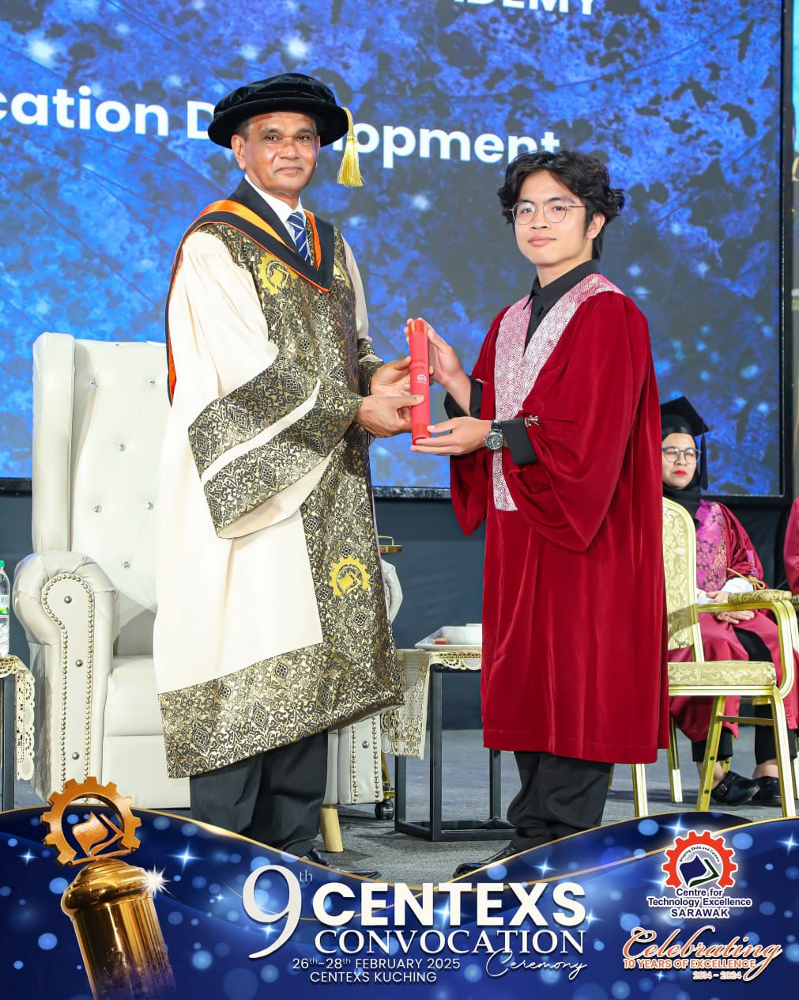
Student Profiles
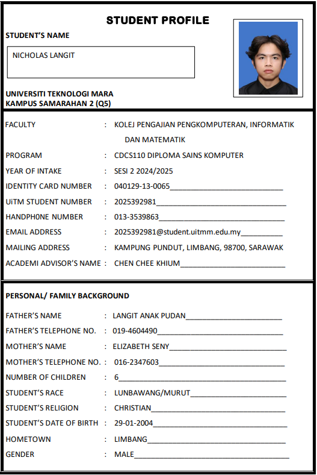
TOPIC 1 : GET READY TO LEARN
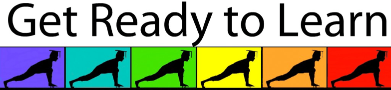
As a student we need to realize that we have entered a phase where we need to be wise in determining something whether good or bad.
We need to be more responsible to arrage our life in university life. We need to be positive student and mind to solve our routine correctly.
In this university life where no one will take care of you, no family to watch you in close but they always praying for your safety and success.
Now it's time to be ready to enter univerity life.
We need to remember why we came to this university.
This is because there are many differences between university students and school students.
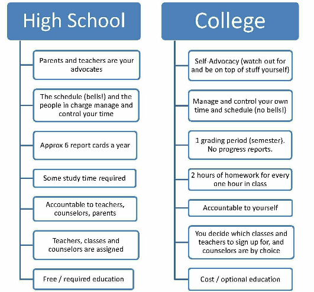
CHARACTERISTIC SUCCESSFUL STUDENT TO BE :
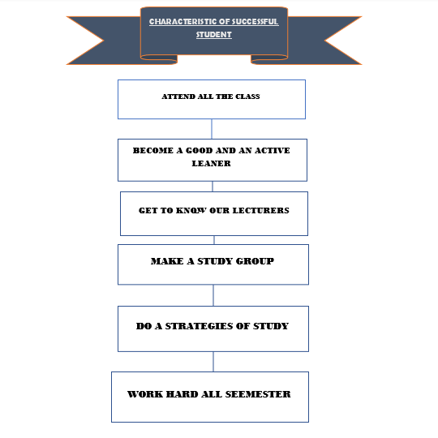
LEARNING STYLE :
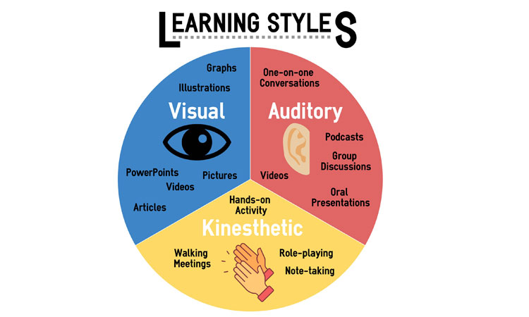
Visual – Student prefer to use images, maps and graphic organizers to access and understand new learning.
Audio – Student prefer using sound and music while they understand new learning.
Kinesthetic – Student prefer using their body, hands and sense of touch.
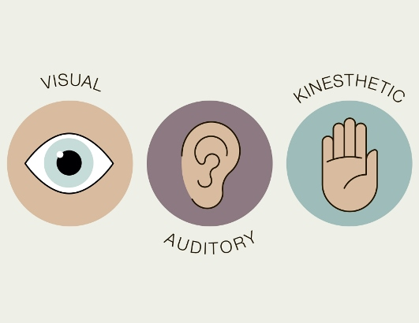
MY LEARNING STYLE.📖
For me I'm in balance of these three learning style.
Among these three, I'm prefer kinesthetic more than the other.
This is a few of skills I do in my learning.
> I prefer to watch others perform a task before I try it.
> I prefer to do hands on learning.
> I try to understand concepts using relation or examples.
> I try to memorize theory with relevant keywords.
> I prefer doing task while listening to calm music.
> I do confirmation with lecturer or friends on task I'm less confident with.
> I prefer to do preparation of solution before starting a task.
> I prefer to do task before bedtime.
TOPIC 2 : GOALS SETTING
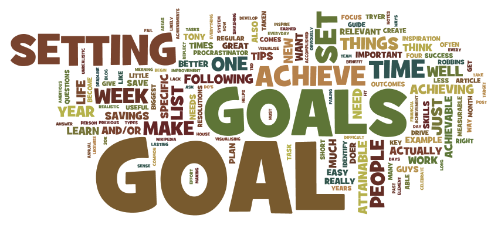
Goals are things that we want to archieve, we aim for as we pursue a certain course of action. You need to set your own goals to archive to keep you focused on were you want to end up.
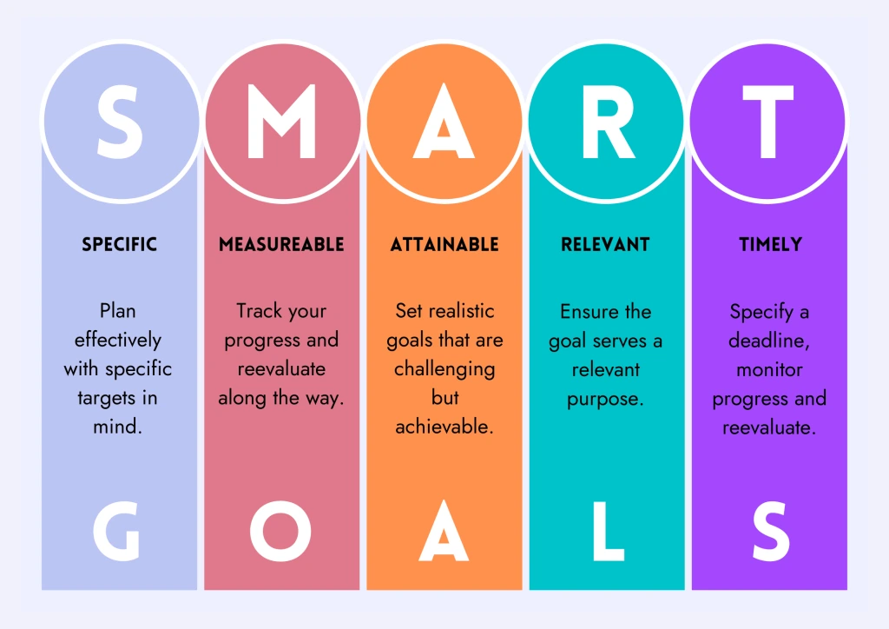
There are two term of goals short term goals which is mean to academic goals and long short term goals which is mean to personal goals.
MY GOALS 🎓
ACADEMIC GOALS
PERSONAL GOALS
1. I WANT TO GET 3.0 POINTER ABOVE.
1. I WANT TO GET A GOOD JOB TO GET A GOOD SALARY.
2. I MUST ATTEND ALL THE CLASSES.
2. I WANT TO BUY THINGS I CAN'T AFFORD BEFORE AS A REWARD.
3. I MUST HAVE A GOOD RELATIONSHIP WITH ALL THE LECTURER .
3. I WANT TO SPOILS ALL MY FAMILY AND FRIENDS WITH GIFTS.
4. I WANT TO BE MORE CONFIDENT TO SPEAK AND SOCIALIZE IN PUBLIC.
4. I WANT TO PUBLISHED MY OWN GAMES.
5. I WILL DO ALL THE ASSIGNMENT AND SUBMIT ON TIME.
5. I WANT TO MAKE MY PARENTS LIVE COMFORTABLE FOR LIFE.
6. I WANT TO MAKE IT UNTIL GRADUATION.
6. I WANT TO TRAVEL ALL AROUND THE WORLD.
MY OBSTACLES 🎓
COURSE:CSC121 - Introduction To Algorithm Design And Development
STEP 1: Tentative Goal Statement
I would like to get excellent in CSC121.
STEP 2: List of Obstacles
The notes that I take are messy and poorly detailed.
The amount of materials that are covered each day.
STEP 3: List of Resources
I will rewrite and edit all of my notes and finished it.
I will read the materials before lecture in session.
STEP 4: Revised Goal Statement
I will try to get good grades in CSC121.
STEP 5: Polished Goal Statement
I will achieve an exccellent marks in CSC121.
COURSE:CSC126 - Fundamentals Of Algorithms And Computer Problem Solving
STEP 1: Tentative Goal Statement
I would like to get an excellent in CSC126.
STEP 2: List of Obstacles
There is a large amount of materials covered each day.
The notes I take are messy and unorganized.
STEP 3: List of Resources
I will study the materials a day before or earlier.
I will rewrite and edits all my notes.
STEP 4: Revised Goal Statement
I will try to get a good marks in CSC126.
STEP 5: Polished Goal Statement
I will achieve an excellent marks in CSC126.
COURSE:CSC253 - Interactive Multimedia
STEP 1: Tentative Goal Statement
I would like to get an excellent in CSC253.
STEP 2: List of Obstacles
There is a cast amount of materials covered each day.
The notes I take are unorganized and incomplete.
STEP 3: List of Resources
I will read the materials earlier before the day of lecture.
I will organized all my notes and finish it.
STEP 4: Revised Goal Statement
I will try to get a good marks in CSC253.
STEP 5: Polished Goal Statement
I will achieve an excellent marks in CSC253.
COURSE:IDA102 - Man And Religion
STEP 1: Tentative Goal Statement
I would like to get an excellent marks in IDA102.
STEP 2: List of Obstacles
The notes I take are messy, unorganized and unfinished.
The materials are boring and uninteresting.
STEP 3: List of Resources
I will rewrite and edit all my notes and finish them.
I will treat it like any required course and devoted the efforts to succeded.
STEP 4: Revised Goal Statement
I will try to get an excellent makrs for IDA102.
STEP 5: Polished Goal Statement
I will achieve an exccellent marks for IDA102.
COURSE:UED102 - Study Skills
STEP 1: Tentative Goal Statement
I would like to get an excellent marks in UED102.
STEP 2: List of Obstacles
The materials are boring and uninteresting.
The notes I take are messy an unorganized.
STEP 3: List of Resources
I will treat it like any required course and devoted the efforts to succeded.
I will rewrite and organized my notes.
STEP 4: Revised Goal Statement
I will try to get an excellent makrs for UED102.
STEP 5: Polished Goal Statement
I will achieve an exccellent marks for UED102.
COURSE:LCC111 - English For Communicative Competence 1
STEP 1: Tentative Goal Statement
I would like to get an excellent marks in LCC111.
STEP 2: List of Obstacles
The notes I take are messy an unorganized.
The materials covered are boring and uninteresting.
STEP 3: List of Resources
I will rewrite and organized my notes.
I will treat it like any required course and devoted the efforts to succeded.
STEP 4: Revised Goal Statement
I will try to get an excellent makrs for LCC111.
STEP 5: Polished Goal Statement
I will achieve an exccellent marks for LCC111.
COURSE:MAT133 - Pre-Calculus
STEP 1: Tentative Goal Statement
I would like to get an excellent marks in MAT133.
STEP 2: List of Obstacles
The materials covered are boring and hard.
The notes I take are messy an unorganized.
STEP 3: List of Resources
I will rewrite and organized my notes.
I will treat it like any required course and devoted the efforts to succeded.
STEP 4: Revised Goal Statement
I will try to get an excellent makrs for MAT133.
STEP 5: Polished Goal Statement
I will achieve an exccellent marks for MAT133.
TOPIC 3 : Time Management
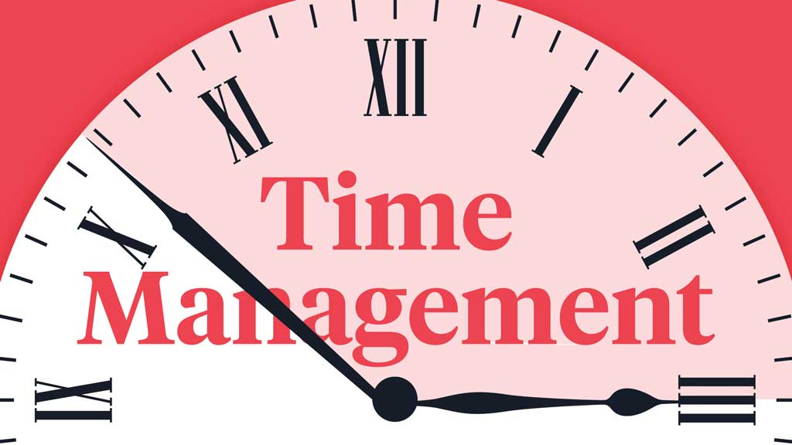
Strategies to develop a Successful System of Study
Fixed-Commitment Calendar
My Daily & Weekly Schedules
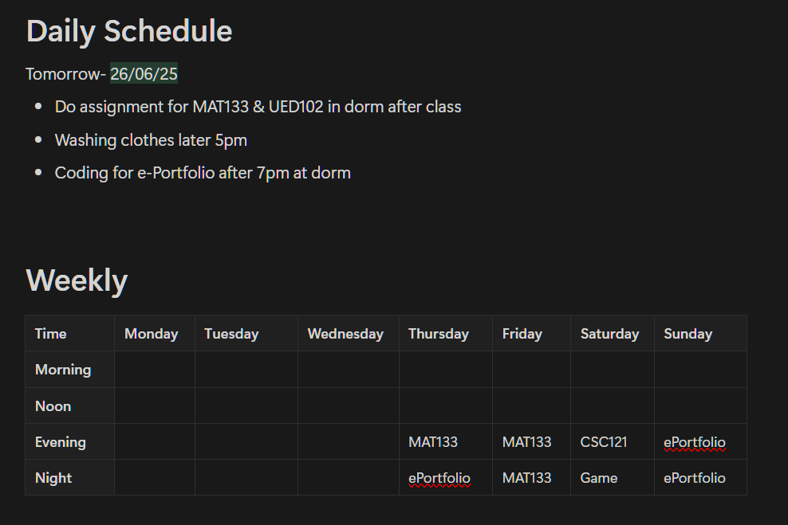
My Calendar
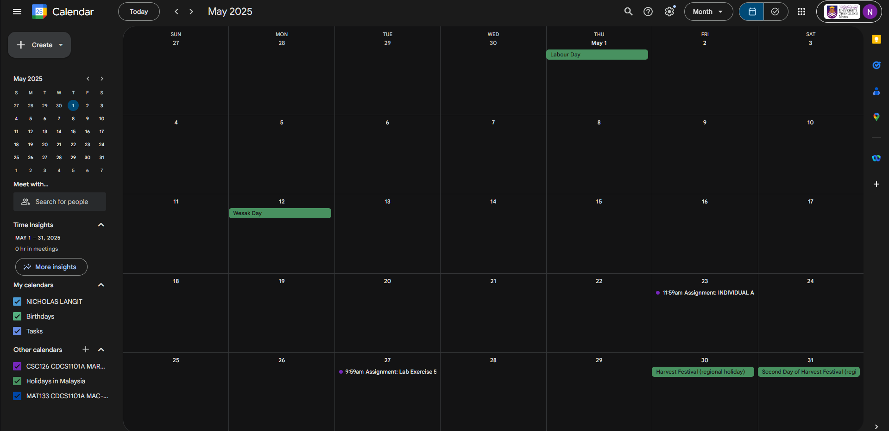
Advantages of being organised
This new habits will keep you on schedule and meet deadline.
This will help reduce stress and make you have a complete control on your task.
Avoid procrastination, the amount of pressure build up is not good for your mental health.
Start now so you won't regret it later. For examples:
Job Task Analysis
Designating Priorities
Routine/ASAP/ Rush
1. Work completed with minimum amount of effort.
Routine
2. Important work.
ASAP
3. Does not require immediate attention.
Routine
4. Quizzes in next 3 days.
Rush
5. Deadline of an assignment is one week.
Rush
6. Should be done as soon as time permits.
ASAP
7. Meal with friends.
Routine
8. Test in next week.
Rush
9. Presentation at tomorrow.
ASAP
10. Socialize with friends.
Routine
My To-Do List
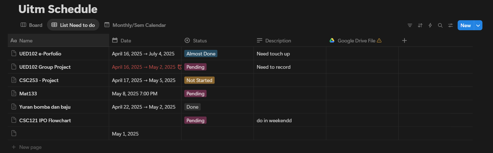
TOPIC 4 : Knowing Campus
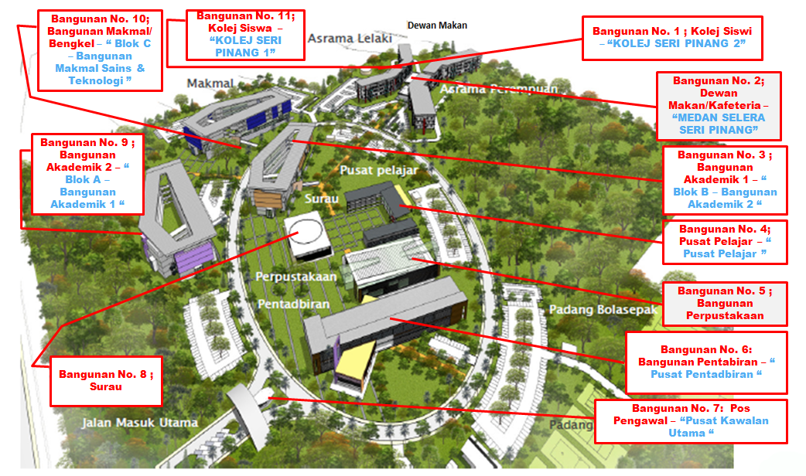
TOPIC 5: MEMORY, IMPROVING CONCENTRATION & READING SYSTEM
This topic on memory, improving concentration, and the reading system aims to enable
students to understand the basic processes of memory, and apply the memory skills in their
learning.
1. MEMORY LEARNING :
Memory is the ability of someone to remember about a few things in their daily life like what they are doing now or what they are doing before or to remain any information in their brain.
Types Of Memory
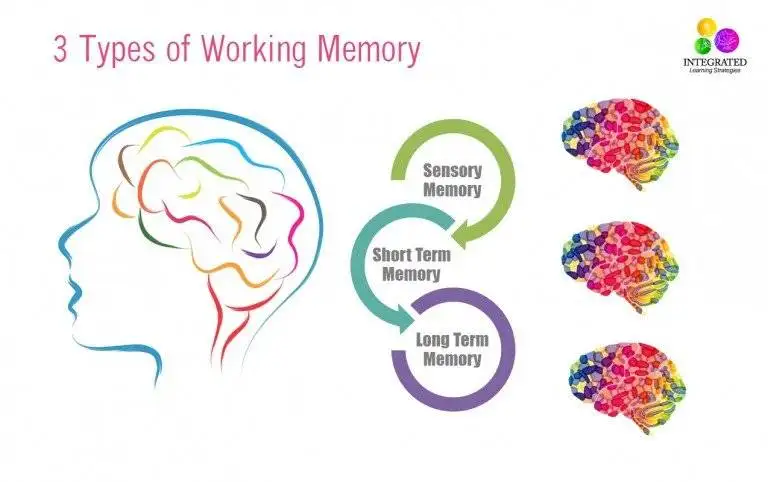
2. CONCENTRATION :
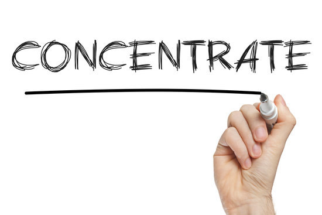
Concentration means focusing your attention on what you are doing. Do not do any else things that will disturb you and you did not pay your attention so you will miss your important information in your class or where you have been going.
For example you can make a concentration table to keep track like this one below:
Date
Study Task
Concentration Problem
Cause
Strategy
11/04/25
MAT133
Hard to focus
Lack of interest
Listening to motivaitonal speech and qoutes
19/04/25
E-Portfolio
Lack of focus
Multitasking another assignment
Finish one task at a time
05/05/25
CSC253
Hard to concetrate
Loud noise from others roommates
Use headset/earphones
3. READING SKILL :
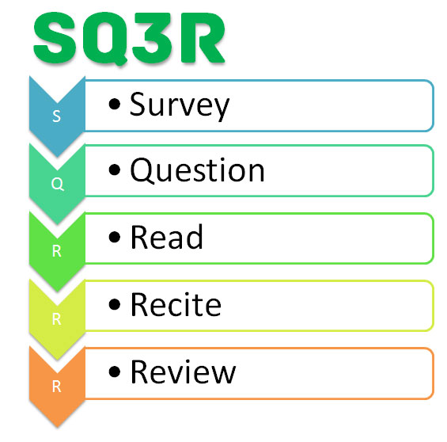
Reading skill means the simple way to improve our learning with you just only read and understand what you have read. Morever, this study aimed at improving
the students reading skills by using the mind map technique in the process of
reading teaching and learning. It can make the students be more understand with new learning that they learn.
TOPIC 6: TAKING LECTURER NOTES
Taking lecturer note means what lecturer said we write down and read it with our own word and ideas. Taking lecturer notes also can use for our revision and preparation before examination day. Here are the strategies to take notes:
> While waiting for lecturer, you can writing down date and day, leave some space to write some important information like date for submit assignment.You can use a small mind maps with colourful pens about what lecturer said and you use your own word to make you more understand what your lecturer want.If you did not understand meet your lecturer after class.
> Prepare before taking notes like ask the lecturer first what topic we may read before class start.So, you can read the topic and prepare some question to lecturer about the things,phrase or words you did not clearly understand.Furthermore, you must sit in front of the classroom that will make you be more focus and you can ask your friends about the topic while waiting your lecturer come to class.
> Become active listener.
EFFECTIVE NOTE TAKING SYSTEM
THE CORNELL NOTE-TAKING METHOD
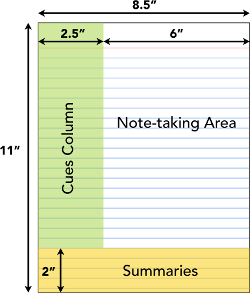
HEADINGS
Always note all headings – the main point – that are made during a lecture.
DETAILS
➢Any facts or explanations that expand or explain the main points that are mentioned.
➢Definitions, word for word, especially if your lecturer repeats them several times.
➢Enumerations or lists of things that are discussed.
➢Anything that is repeated and spelled out.
➢Anything that is written on the whiteboard or on a PowerPoint slide.
➢Drawings, charts, or problems that are written on the board.
TOPIC 7: ACADEMIC INTEGRITY & PERFORMANCE
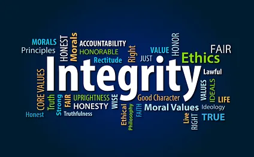
1. AVOIDING PLAGIARSM :
Plagiarism is just copying someone else’s work. It usually happens when people don’t get the assignment and are too shy to ask. Instead, try using your own ideas—look things up for help, but don’t copy-paste. Make it yours!
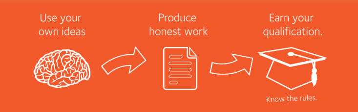
2. CALCULATING GRADE POINT AVERAGE ( CGPA ) :
CGPA is the overall result shown at the end of each semester. It reflects a student’s academic performance based on all exam results and assessments, with both a semester CGPA and a cumulative CGPA.